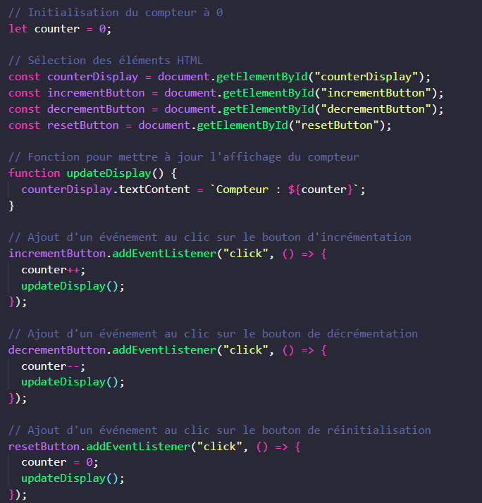

Explications détaillées :
- Bouton de décrémentation : counter--; updateDisplay(); Permet de diminuer la valeur du compteur de 1 à chaque clic.
- Bouton de réinitialisation : counter = 0; updateDisplay(); Remet la valeur du compteur à 0.
- Fonction updateDisplay() : Une fonction dédiée pour mettre à jour l'affichage, utilisée par chaque événement pour éviter la répétition de code.